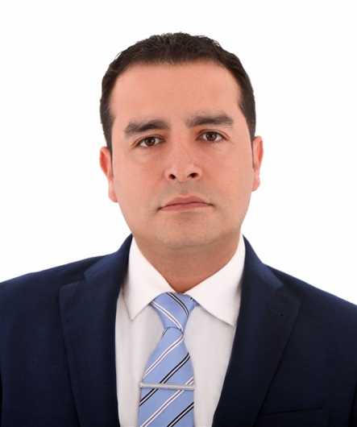

Con ayuda de los avances tecnológicos, podemos realizar cirugías de mínima invasión con una gran efectividad, logrando en el paciente una recuperación más rápida que con una cirugía abierta, permitiendo que se reincorpore en poco tiempo a su rutina habitual.
